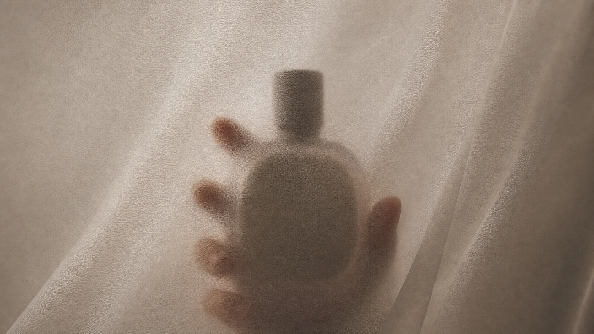
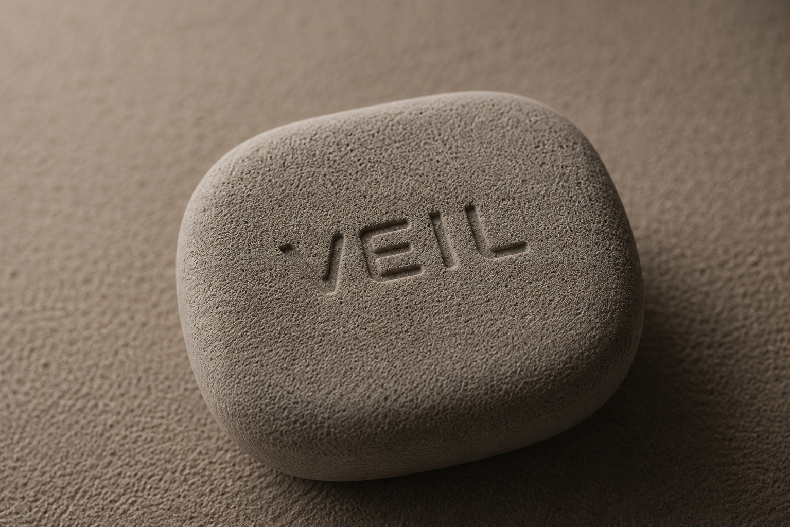
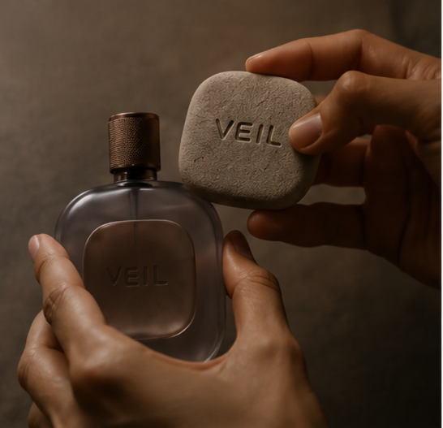
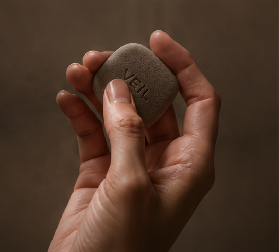
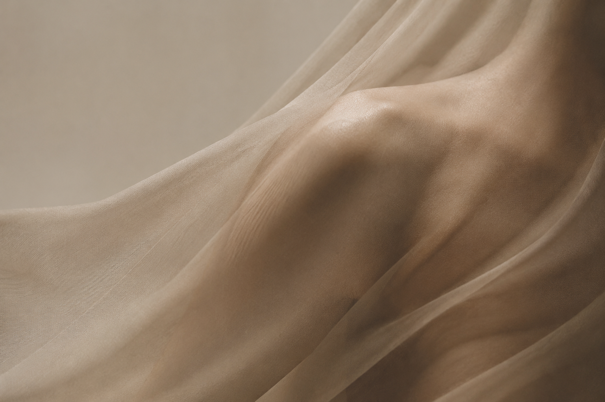

Movement
몸의 움직임에서
시작되고
Movement-based Fragrance
향은 공기 중에 흩어지는 것이 아니라
몸 위에 얇게 레이어링되는 감각입니다.

VEIL은 향을 후각의 언어에만 머무르게 하지 않습니다. 피부의 온도, 움직임의 압력, 이완과 긴장의 리듬을 촉감 기반의 브랜드 경험으로 번역합니다.
몸의 움직임에서
시작되고
피부에 닿아
감각이 되고
손끝의 촉감으로
이어지며
향으로
기억됩니다.
05
향은 사라지지만 촉감은 남습니다.
VEIL은 향 이후에도
감각이 지속될 수 있도록
촉감을 브랜드 경험으로 확장했습니다.



피부에서 시작된 감각은
손끝에서 계속됩니다.

Brand Philosophy